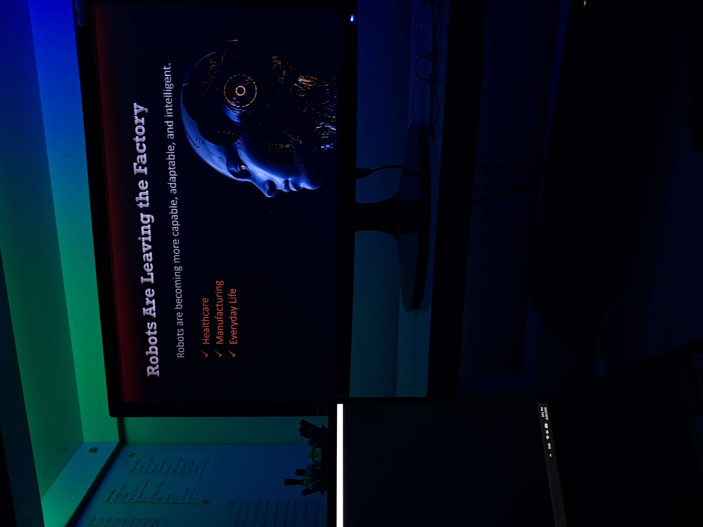

Graduate of Network & Software (Computer). Interested in web technologies, software development, graphic design, and technical problem-solving.
Experienced in personal projects related to PrestaShop, domain and hosting configuration, website setup, and documenting technical learning and troubleshooting processes.
